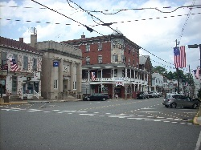

Siblings
I am the youngest of 5 girls in my family. I only have half siblings, but I consider them just my sisters. All my sisters are 20 or older and I am still down here at 15. This is a good and a bad thing. It is good because the two sisters that live with me, are currently in college, so it is just me and my mom at home. My parents are divorced, so it has always been just us girls. Here is a little bit about each of my sisters:
Mom and Dad
My mom has lived in or around Duncanon, Pennslyvania her entire life. My dad, on the other hand, used to live in Ohio. My mom and dad met online on a game call Tumble Bees. They started talking in chat and then that lead to texting. Then started dating, and my dad would come and visit my mom from time to time, and my mom would visit him. My dad would have moved here sooner, but his mom was very sick and he didn't want to leave her in a time of need. Once, she passed away, my mom told my dad that she was pregnant with me, and my dad moved down here. Once I was born, my parents waited a while, but eventually got married in 2007.